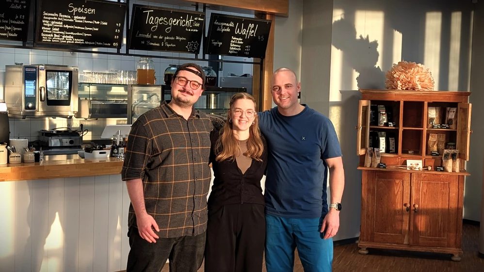

Wer wir sind
Tjorven & Anton
Wir, das Tjorven Bistro in der Klima Arena Sinsheim, laden dich zu frischen, regionalen Speisen und Getränken ein. Ob ein schneller Snack, ein gemütlicher Kaffee oder ein saisonales Mittagessen – bei uns findest du eine abwechslungsreiche Auswahl für Familien, Touristen und Geschäftsbesucher.
Wir legen Wert auf regionale und saisonale Zutaten sowie ein modernes und gemütliches Ambiente direkt im Herzen der Klima Arena.
Mit freundlichem Service, kostenlosem WLAN und barrierefreiem Zugang sind wir der ideale Treffpunkt – ganz unabhängig von einem Besuch der Ausstellung. Wir freuen uns auf dich!
Mit Erfahrung an unserer Seite
Roman
Gute Küche braucht mehr als Zutaten. Sie braucht Erfahrung, Haltung – und manchmal jemanden, der von Anfang an dabei ist.
Roman ist so jemand. Gelernter Koch, seit Jahren Inhaber des Restaurant Glückstein in Mannheim. Einer, der weiß, wie es sich anfühlt, jeden Tag für das eigene Bistro einzustehen – und was dabei wirklich zählt.
Er begleitet uns mit Erfahrung statt Vorgaben, mit ehrlichem Rat statt leeren Worten. Wenn Fragen entstehen, wenn Ideen reifen oder wenn man einfach jemanden braucht, der es ernst meint: Roman ist da. Diese Art von Vertrauen ist selten – und man schmeckt es.
Restaurant Glückstein, Mannheim
Unsere Überzeugungen
Was uns antreibt
Regional verwurzelt
Wir beziehen unsere Zutaten so lokal wie möglich – kurze Wege, frische Qualität, Unterstützung für die Region.
Saisonal gedacht
Unsere Karte folgt den Jahreszeiten. Was gerade wächst und schmeckt, landet auf dem Teller – echt und unverfälscht.
Pflanzlich & bewusst
Unser gesamtes Angebot ist 100 % vegan. Nachhaltige Küche muss nicht auf Genuss verzichten – das beweisen wir täglich.
Handgemacht & ehrlich
Waffeln, Zimtschnecken, Dressings, Pesto – wir machen vieles selbst. Weil man den Unterschied schmeckt.
Offen & herzlich
Barrierefreier Zugang, kostenloses WLAN und ein Service, der sich wirklich kümmert. Alle sind willkommen.
Gemeinschaft stärken
Das Bistro ist mehr als Essen – es ist ein Treffpunkt für Familien, Teams und Menschen aus der Region.
Komm vorbei
Wir freuen uns auf dich
Schau einfach vorbei – ein Ausstellungsticket brauchst du nicht. Wir sind von Mittwoch bis Sonntag für dich da, in den BW-Ferien täglich.